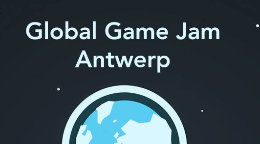
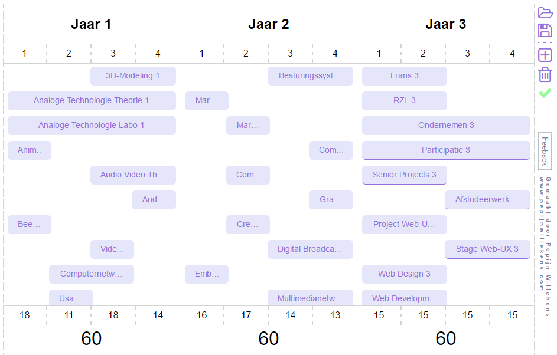
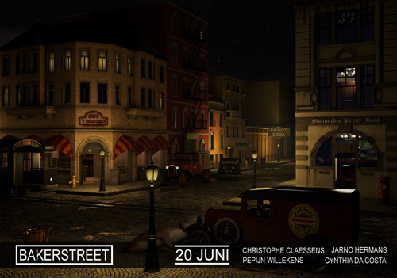

-
Hey Visitor!
I make games and do a lot of other things!
=
- From Antwerp, Belgium
- Still a student
- Member of The House of Indie
-
Skills
Programming
- Unity/C#
- .NET/C#
- Javascript / Typescript
- Python
- Html/css
Other
- Usability/UX
- Electronics
- Graphic Design
- Game Design
- Web Design
- Git
- 3D Modeling
-

Studies Multimedia Technology
(2014-2018)I study Multimedia Technology at Karel De Grote in Antwerp. It's a very wide course and includes programming, audio, video, 3D, electronics, User Experience, project management, marketing, ...
-
 Global Game Jam 2016 Antwerp
In colaboration with The House of Indie and Alexandar Barratt, We organised the Global Game Jam 2016 site in Antwerp. We had arround 30 participants on our location. My role was to communicate towards particpants among other things.
-
Screenshake 2016
The House of Indie organised Screenshake 2016, Belgiums only international indie games festival. During the 3-day-event I got the responsability to manage volunteers and lead everything in a good direction.
-
Headstart 2015
I participated at Headstart 2015, an international summerschool for gamedevelopers who want to start their own studio.
It was a truly unique experience to be there!
-
Solar Clap
Solar Clap is a 4-player co-op Clapping-rhythm game instalation.
I am currently working on Solar Clap with Michel Marsman. We do this in our free time.
-
Grimey slug takes the morning bus
While organising Global Game Jam 2016 in Antwerp, I also made a stopmotion video with Ester Vanhoutte. Since we started late with this, we didn't had the time to put sound on it.
-
 PDT Planner
In the Beglian college system, you can choose when you do which course and scale your studies over more years.
I made a web app to plan your program, that takes all restrictions into account. (Dutch)
-
Building horizon
Building horizon is a strategy game where your build tents to spawn troops, smash your head against opponents, and try to destoy the enemy castle.
It was made in a spontaneous gamejam with Alexandar Barratt and Jacob Goldfarb.
-
Castle Void
I continued alone on Building horizon, and turned it into an Arcade game that is projected on the ground. I also build an arcade machine for this.
-
Blind Car Driving Simulator
During the No Screen Jam, an event where you make a game that doesn't include a screen in 48 hours, We made a Car Driving Simulator where you navigate by the sound of your environment.
-
Intergalactic Jellyfish
At Zoomachines 2015, Me and my team made a game where you put your arm in a box, and you have to feed a monster jellyfish in the other dimension! Your situation only gets worse the more you struggle.
-

Towerfall
I know, the name is poorly chosen, but it's a totally different game.
This was my first Android game. I made it alone in one weekend. You jump down from floor to floor without skipping one and try to reach as much floors as possible. It's quite addicting.
-
Global Game Jam Simulator 2015
This was my first gamejam. Together with Alexandar Barratt and Anton Shumin, I made a chaotic game where you need to survive while finishing your game in time.
-
Okay,
So those were my free time projects. I also made a few things at school!
Hobby Projects
School Projects
-
 Poster bakerstreet
We had a 2nd year assignment to make a poster of a fictive animation film. The assignment was about the 3D Modeling of a scene.
Made with Jarno Hermans, Cynthia Da Costa and Christophe Claessens.
-
The Great Wall of Trump
In our 2nd year we had an entire week dedicated to working in teams to make a mobile game. The theme was "the US presidents elections 2016". We made a game where you, Juan The Mexican, climb the Great wall of Trump.
Made with Jarno Hermans, Willem Gillis and Marlies Geerts.
-
Lost Kitten
Lost kitten is a first year project, made together with Phedra Moerloos and Thessa Moerloos.
It's a puzzle game where you have to find your way through labyrinths to reach the exit. The labyriths are different than you're used to though. The game has 5 levels to play.
-
3D animation
How to make a network cableAnother first year assignment was to make an didactical 3D animation.
I made an animation on how to make a network cable. It's quite compact but it looks good for a first Cinema4D project. -
Contact